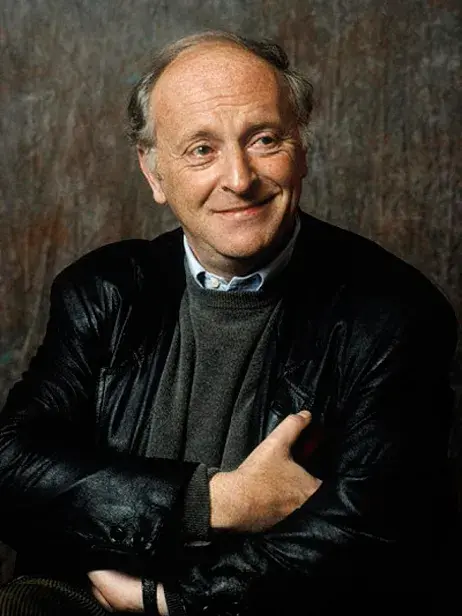
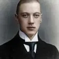
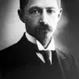

Дорогой Карл Двенадцатый, сражение под Полтавой,
слава Богу, проиграно. Как говорил картавый,
«время покажет кузькину мать», руины,
кости посмертной радости с привкусом Украины.
То не зелено-квитный, траченый изотопом,
— жовто-блакитный реет над Конотопом,
скроенный из холста: знать, припасла Канада —
даром, что без креста: но хохлам не надо.
Гой ты, рушник-карбованец, семечки в потной жмене!
Не нам, кацапам, их обвинять в измене.
Сами под образами семьдесят лет в Рязани
с залитыми глазами жили, как при Тарзане.
Скажем им, звонкой матерью паузы метя, строго:
скатертью вам, хохлы, и рушником дорога.
Ступайте от нас в жупане, не говоря в мундире,
по адресу на три буквы на все четыре
стороны. Пусть теперь в мазанке хором Гансы
с ляхами ставят вас на четыре кости, поганцы.
Как в петлю лезть, так сообща, сук выбирая в чаще,
а курицу из борща грызть в одиночку слаще?
Прощевайте, хохлы! Пожили вместе, хватит.
Плюнуть, что ли, в Днипро: может, он вспять покатит,
брезгуя гордо нами, как скорый, битком набитый
отвернутыми углами и вековой обидой.
Не поминайте лихом! Вашего неба, хлеба
нам — подавись мы жмыхом и потолком — не треба.
Нечего портить кровь, рвать на груди одежду.
Кончилась, знать, любовь, коли была промежду.
Что ковыряться зря в рваных корнях глаголом!
Вас родила земля: грунт, чернозем с подзолом.
Полно качать права, шить нам одно, другое.
Эта земля не дает вам, кавунам, покоя.
Ой-да левада-степь, краля, баштан, вареник.
Больше, поди, теряли: больше людей, чем денег.
Как-нибудь перебьемся. А что до слезы из глаза,
Нет на нее указа ждать до другого раза.
С Богом, орлы, казаки, гетманы, вертухаи!
Только когда придет и вам помирать, бугаи,
будете вы хрипеть, царапая край матраса,
строчки из Александра, а не брехню Тараса.

На независимость Украины
Не выходи из комнаты…
Не выходи из комнаты, не совершай ошибку.
Зачем тебе Солнце, если ты куришь Шипку?
За дверью бессмысленно всё, особенно — возглас счастья.
Только в уборную — и сразу же возвращайся.
О, не выходи из комнаты, не вызывай мотора.
Потому что пространство сделано из коридора
и кончается счетчиком. А если войдет живая
милка, пасть разевая, выгони не раздевая.
Не выходи из комнаты; считай, что тебя продуло.
Что интересней на свете стены и стула?
Зачем выходить оттуда, куда вернешься вечером
таким же, каким ты был, тем более — изувеченным?
О, не выходи из комнаты. Танцуй, поймав, боссанову
в пальто на голое тело, в туфлях на босу ногу.
В прихожей пахнет капустой и мазью лыжной.
Ты написал много букв; еще одна будет лишней.
Не выходи из комнаты. О, пускай только комната
догадывается, как ты выглядишь. И вообще инкогнито
эрго сум, как заметила форме в сердцах субстанция.
Не выходи из комнаты! На улице, чай, не Франция.
Не будь дураком! Будь тем, чем другие не были.
Не выходи из комнаты! То есть дай волю мебели,
слейся лицом с обоями. Запрись и забаррикадируйся
шкафом от хроноса, космоса, эроса, расы, вируса.
Зачем тебе Солнце, если ты куришь Шипку?
За дверью бессмысленно всё, особенно — возглас счастья.
Только в уборную — и сразу же возвращайся.
О, не выходи из комнаты, не вызывай мотора.
Потому что пространство сделано из коридора
и кончается счетчиком. А если войдет живая
милка, пасть разевая, выгони не раздевая.
Не выходи из комнаты; считай, что тебя продуло.
Что интересней на свете стены и стула?
Зачем выходить оттуда, куда вернешься вечером
таким же, каким ты был, тем более — изувеченным?
О, не выходи из комнаты. Танцуй, поймав, боссанову
в пальто на голое тело, в туфлях на босу ногу.
В прихожей пахнет капустой и мазью лыжной.
Ты написал много букв; еще одна будет лишней.
Не выходи из комнаты. О, пускай только комната
догадывается, как ты выглядишь. И вообще инкогнито
эрго сум, как заметила форме в сердцах субстанция.
Не выходи из комнаты! На улице, чай, не Франция.
Не будь дураком! Будь тем, чем другие не были.
Не выходи из комнаты! То есть дай волю мебели,
слейся лицом с обоями. Запрись и забаррикадируйся
шкафом от хроноса, космоса, эроса, расы, вируса.
И вечный бой…
И вечный бой.
Покой нам только снится.
И пусть ничто
не потревожит сны.
Седая ночь,
и дремлющие птицы
качаются от синей тишины.
И вечный бой.
Атаки на рассвете.
И пули,
разучившиеся петь,
кричали нам,
что есть еще Бессмертье…
… А мы хотели просто уцелеть.
Простите нас.
Мы до конца кипели,
и мир воспринимали,
как бруствер.
Сердца рвались,
метались и храпели,
как лошади,
попав под артобстрел.
…Скажите… там…
чтоб больше не будили.
Пускай ничто
не потревожит сны.
…Что из того,
что мы не победили,
что из того,
что не вернулись мы?..
Покой нам только снится.
И пусть ничто
не потревожит сны.
Седая ночь,
и дремлющие птицы
качаются от синей тишины.
И вечный бой.
Атаки на рассвете.
И пули,
разучившиеся петь,
кричали нам,
что есть еще Бессмертье…
… А мы хотели просто уцелеть.
Простите нас.
Мы до конца кипели,
и мир воспринимали,
как бруствер.
Сердца рвались,
метались и храпели,
как лошади,
попав под артобстрел.
…Скажите… там…
чтоб больше не будили.
Пускай ничто
не потревожит сны.
…Что из того,
что мы не победили,
что из того,
что не вернулись мы?..
Пилигримы
Мимо ристалищ, капищ,
мимо храмов и баров,
мимо шикарных кладбищ,
мимо больших базаров,
мира и горя мимо,
мимо Мекки и Рима,
синим солнцем палимы,
идут по земле пилигримы.
Увечны они, горбаты,
голодны, полуодеты,
глаза их полны заката,
сердца их полны рассвета.
За ними поют пустыни,
вспыхивают зарницы,
звезды горят над ними,
и хрипло кричат им птицы:
что мир останется прежним,
да, останется прежним,
ослепительно снежным,
и сомнительно нежным,
мир останется лживым,
мир останется вечным,
может быть, постижимым,
но все-таки бесконечным.
И, значит, не будет толка
от веры в себя да в Бога.
…И, значит, остались только
иллюзия и дорога.
И быть над землей закатам,
и быть над землей рассветам.
Удобрить ее солдатам.
Одобрить ее поэтам.
мимо храмов и баров,
мимо шикарных кладбищ,
мимо больших базаров,
мира и горя мимо,
мимо Мекки и Рима,
синим солнцем палимы,
идут по земле пилигримы.
Увечны они, горбаты,
голодны, полуодеты,
глаза их полны заката,
сердца их полны рассвета.
За ними поют пустыни,
вспыхивают зарницы,
звезды горят над ними,
и хрипло кричат им птицы:
что мир останется прежним,
да, останется прежним,
ослепительно снежным,
и сомнительно нежным,
мир останется лживым,
мир останется вечным,
может быть, постижимым,
но все-таки бесконечным.
И, значит, не будет толка
от веры в себя да в Бога.
…И, значит, остались только
иллюзия и дорога.
И быть над землей закатам,
и быть над землей рассветам.
Удобрить ее солдатам.
Одобрить ее поэтам.
Одиночество
Когда теряет равновесие
твоё сознание усталое,
когда ступеньки этой лестницы
уходят из-под ног,
как палуба,
когда плюёт на человечество
твоё ночное одиночество, —
ты можешь
размышлять о вечности
и сомневаться в непорочности
идей, гипотез, восприятия
произведения искусства,
и — кстати — самого зачатия
Мадонной сына Иисуса.
Но лучше поклоняться данности
с глубокими её могилами,
которые потом,
за давностью,
покажутся такими милыми.
Да.
Лучше поклоняться данности
с короткими её дорогами,
которые потом
до странности
покажутся тебе
широкими,
покажутся большими,
пыльными,
усеянными компромиссами,
покажутся большими крыльями,
покажутся большими птицами.
Да. Лучше поклоняться данности
с убогими её мерилами,
которые потом до крайности,
послужат для тебя перилами
(хотя и не особо чистыми),
удерживающими в равновесии
твои хромающие истины
на этой выщербленной лестнице.
твоё сознание усталое,
когда ступеньки этой лестницы
уходят из-под ног,
как палуба,
когда плюёт на человечество
твоё ночное одиночество, —
ты можешь
размышлять о вечности
и сомневаться в непорочности
идей, гипотез, восприятия
произведения искусства,
и — кстати — самого зачатия
Мадонной сына Иисуса.
Но лучше поклоняться данности
с глубокими её могилами,
которые потом,
за давностью,
покажутся такими милыми.
Да.
Лучше поклоняться данности
с короткими её дорогами,
которые потом
до странности
покажутся тебе
широкими,
покажутся большими,
пыльными,
усеянными компромиссами,
покажутся большими крыльями,
покажутся большими птицами.
Да. Лучше поклоняться данности
с убогими её мерилами,
которые потом до крайности,
послужат для тебя перилами
(хотя и не особо чистыми),
удерживающими в равновесии
твои хромающие истины
на этой выщербленной лестнице.

Наступление
Та страна, что могла быть раем,
Стала логовищем огня.
Мы четвертый день наступаем,
Мы не ели четыре дня.
Но не надо яства земного
В этот страшный и светлый час,
Оттого, что Господне слово
Лучше хлеба питает нас.
И залитые кровью недели
Ослепительны и легки.
Надо мною рвутся шрапнели,
Птиц быстрей взлетают клинки.
Я кричу, и мой голос дикий.
Это медь ударяет в медь.
Я, носитель мысли великой,
Не могу, не могу умереть.
Словно молоты громовые
Или волны гневных морей,
Золотое сердце России
Мерно бьется в груди моей.
И так сладко рядить Победу,
Словно девушку, в жемчуга,
Проходя по дымному следу
Отступающего врага.
Стала логовищем огня.
Мы четвертый день наступаем,
Мы не ели четыре дня.
Но не надо яства земного
В этот страшный и светлый час,
Оттого, что Господне слово
Лучше хлеба питает нас.
И залитые кровью недели
Ослепительны и легки.
Надо мною рвутся шрапнели,
Птиц быстрей взлетают клинки.
Я кричу, и мой голос дикий.
Это медь ударяет в медь.
Я, носитель мысли великой,
Не могу, не могу умереть.
Словно молоты громовые
Или волны гневных морей,
Золотое сердце России
Мерно бьется в груди моей.
И так сладко рядить Победу,
Словно девушку, в жемчуга,
Проходя по дымному следу
Отступающего врага.
Слово
В оный день, когда над миром новым
Бог склонял лицо свое, тогда
Солнце останавливали словом,
Словом разрушали города.
И орел не взмахивал крылами,
Звезды жались в ужасе к луне,
Если, точно розовое пламя,
Слово проплывало в вышине.
А для низкой жизни были числа,
Как домашний, подъяремный скот,
Потому что все оттенки смысла
Умное число передает.
Патриарх седой, себе под руку
Покоривший и добро и зло,
Не решаясь обратиться к звуку,
Тростью на песке чертил число.
Но забыли мы, что осиянно
Только слово средь земных тревог,
И в Евангелии от Иоанна
Сказано, что Слово это — Бог.
Мы ему поставили пределом
Скудные пределы естества.
И, как пчелы в улье опустелом,
Дурно пахнут мертвые слова.
Бог склонял лицо свое, тогда
Солнце останавливали словом,
Словом разрушали города.
И орел не взмахивал крылами,
Звезды жались в ужасе к луне,
Если, точно розовое пламя,
Слово проплывало в вышине.
А для низкой жизни были числа,
Как домашний, подъяремный скот,
Потому что все оттенки смысла
Умное число передает.
Патриарх седой, себе под руку
Покоривший и добро и зло,
Не решаясь обратиться к звуку,
Тростью на песке чертил число.
Но забыли мы, что осиянно
Только слово средь земных тревог,
И в Евангелии от Иоанна
Сказано, что Слово это — Бог.
Мы ему поставили пределом
Скудные пределы естества.
И, как пчелы в улье опустелом,
Дурно пахнут мертвые слова.
За что
О, что за скучная забота
Пусканье мыльных пузырей!
Ну, так и кажется, что кто-то
Нам карты сдал без козырей.
В них лучезарное горенье,
А в нас тяжелая тоска —
Нам без надежды, без волненья
Проигрывать наверняка.
О нет! Из всех возможных счастий
Мы выбираем лишь одно,
Лишь то, что синим углем страсти
Нас опалить осуждено.
Пусканье мыльных пузырей!
Ну, так и кажется, что кто-то
Нам карты сдал без козырей.
В них лучезарное горенье,
А в нас тяжелая тоска —
Нам без надежды, без волненья
Проигрывать наверняка.
О нет! Из всех возможных счастий
Мы выбираем лишь одно,
Лишь то, что синим углем страсти
Нас опалить осуждено.

Вечер
О счастье мы всегда лишь вспоминаем.
А счастье всюду. Может быть, оно —
Вот этот сад осенний за сараем
И чистый воздух, льющийся в окно.
В бездонном небе легким белым краем
Встает, сияет облако. Давно
Слежу за ним… Мы мало видим, знаем,
А счастье только знающим дано.
Окно открыто. Пискнула и села
На подоконник птичка. И от книг
Усталый взгляд я отвожу на миг.
День вечереет, небо опустело.
Гул молотилки слышен на гумне…
Я вижу, слышу, счастлив. Все во мне.
А счастье всюду. Может быть, оно —
Вот этот сад осенний за сараем
И чистый воздух, льющийся в окно.
В бездонном небе легким белым краем
Встает, сияет облако. Давно
Слежу за ним… Мы мало видим, знаем,
А счастье только знающим дано.
Окно открыто. Пискнула и села
На подоконник птичка. И от книг
Усталый взгляд я отвожу на миг.
День вечереет, небо опустело.
Гул молотилки слышен на гумне…
Я вижу, слышу, счастлив. Все во мне.
Родина
Под небом мертвенно-свинцовым Угрюмо меркнет зимний день,
И нет конца лесам сосновым,
И далеко до деревень.
Один туман молочно-синий,
Как чья-то кроткая печаль,
Над этой снежною пустыней
Смягчает сумрачную даль.
И нет конца лесам сосновым,
И далеко до деревень.
Один туман молочно-синий,
Как чья-то кроткая печаль,
Над этой снежною пустыней
Смягчает сумрачную даль.
Настанет день, исчезну я
Настанет день — исчезну я,
А в этой комнате пустой
Все то же будет: стол, скамья
Да образ, древний и простой.
И так же будет залетать
Цветная бабочка в шелку,
Порхать, шуршать и трепетать
По голубому потолку.
И так же будет неба дно
Смотреть в открытое окно
и море ровной синевой
манить в простор пустынный свой.
А в этой комнате пустой
Все то же будет: стол, скамья
Да образ, древний и простой.
И так же будет залетать
Цветная бабочка в шелку,
Порхать, шуршать и трепетать
По голубому потолку.
И так же будет неба дно
Смотреть в открытое окно
и море ровной синевой
манить в простор пустынный свой.